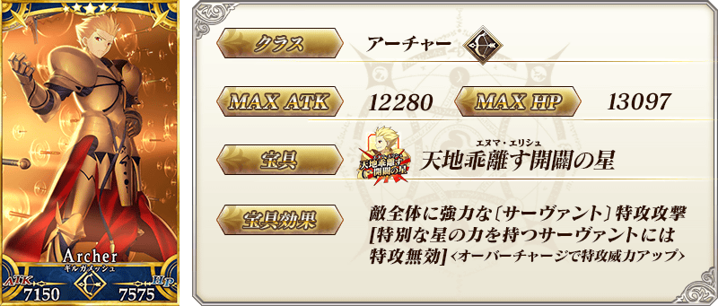
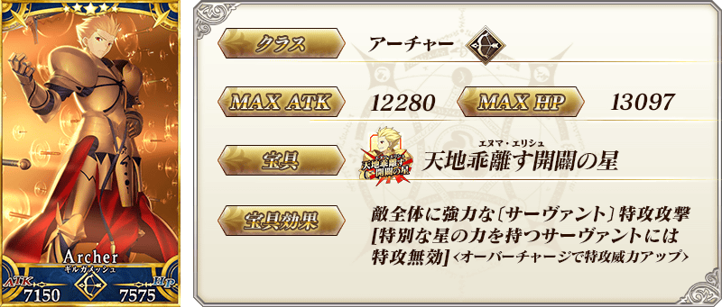
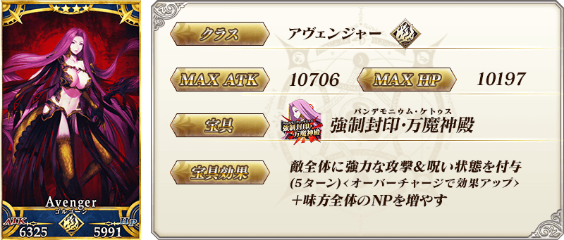
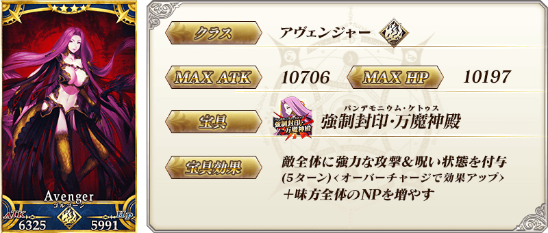
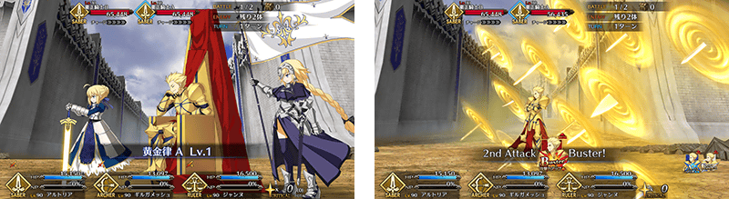

◆「Battle in New York 2019Pick Up召喚」期間◆
期間:2019年9月18日(三) 17:0018:00～10月2日(三) 11:59
舉辦期間限定「Battle in New York 2019Pick Up召喚」！
期間限定活動「Battle in New York 2019」中活躍的期間限定從者「★5(SSR)吉爾伽美什(Archer)」登場！
本次在上述再加上「★4(SR)戈爾貢」「★3(R)豹人」Pick Up！
詳情請在聖晶石召喚畫面左下的召喚詳細確認。
「★5(SSR)ラウンド・アンド・ラウンド」「★4(SR)フライ・オフ」「★3(R)フロム・ウルク」做為期間限定概念禮裝登場！
裝備上述3種概念禮裝的話，在期間限定活動「Battle in New York 2019」中會提升活動道具的掉落獲得數。
◆有關從者的注意◆
※「★5(SSR)吉爾伽美什(Archer)」在Pick Up期間結束後不會追加到故事召喚。
※Pick Up期間中，「★4(SR)戈爾貢」「★3(R)豹人」就算通過各章前也能入手。
※「★4(SR)戈爾貢」「★3(R)豹人」在Pick Up期間結束後仍會在故事召喚被抽出。
◆有關概念禮裝的注意◆
※「★3(R)フロム・ウルク」在Pick Up期間中，也能靠友情點數召喚獲得。
※請注意自友情點數召喚抽出的「★3(R)フロム・ウルク」在自動變還設定登錄★3(R)概念禮裝的情況，會變成自動變還的對象。
Pick Up期間中，期間限定從者、Pick Up從者、期間限定概念禮裝的出現機率提升！
11次召喚中確定1張★4(SR)以上和確定1位★3(R)以上的從者！
※確定★4(SR)以上包含從者和概念禮裝。
※本頁面皆為開發中圖片。會有與實際圖片相異的情況。
 
※上述「★5(SSR)吉爾伽美什(Archer)」的卡面為靈基再臨第2階段。

※上述「★5(SSR)吉爾伽美什(Archer)」的卡面為靈基再臨第2階段。
 
※上述「★4(SR)戈爾貢」的卡面為靈基再臨第2階段。

※上述「★4(SR)戈爾貢」的卡面為靈基再臨第2階段。

 ※上述「★3(R)豹人」的卡面為靈基再臨第2階段。
※上述「★3(R)豹人」的卡面為靈基再臨第2階段。

|
★★★★★SSR |
|
★★★★SR
|

|
★★★R |

 ※上述「★5(SSR)吉爾伽美什(Archer)」的立繪為靈基再臨第2階段。
※上述「★5(SSR)吉爾伽美什(Archer)」的立繪為靈基再臨第2階段。

【9月18日(三) 18:00追記】
翻新「★5(SSR)吉爾伽美什(Archer)」的戰鬥動作及寶具演出！
在「Fate/Grand Order」官方網站內的公告中，以影片公開寶具演出，敬請確認。
◆翻新實施時間◆
2019年9月18日(三) 17:0018:00～

【9月18日(三) 18:00追記】
介紹「★4(SR)戈爾貢」的寶具演出！
在「Fate/Grand Order」官方網站內的公告中，以影片公開寶具演出，敬請確認。
其他還有。期間限定活動「Battle in New York 2019」同時舉辦！
關於詳情，請自下述橫幅確認。
■「Battle in New York 2019」詳細情報